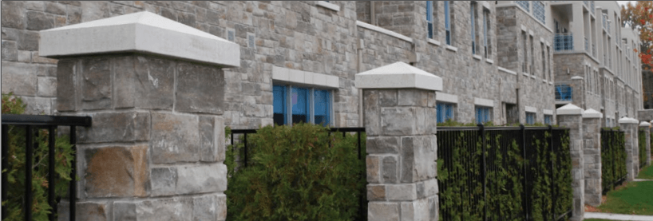
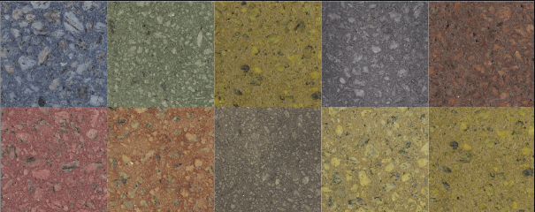
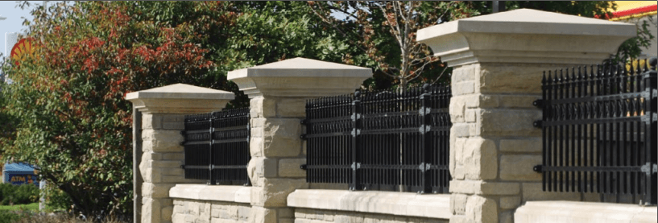
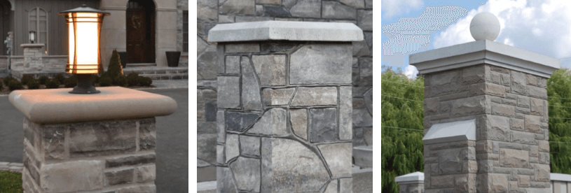

 Ковпаки на
паркан з бетону з мармуровою крихтою - нововведення на українському ринку. Їх ще часто називають капелюхами або
кришками для стовпчиків на паркан (у статті будуть вживатись різні назви). Кришки для парканних стовпів з
мозаїчного бетону - відмінна альтернатива кришок з металу, адже вони набагато красивіші, довговічніші,
ефектніші. Ковпаки на паркан з бетону з мозаїчною крихтою притягують захоплені погляди. Капелюхи для парканних
стовпів з мармурової крихти дуже поширені в Європі, так як вони довговічні, та мають високі естетичні
властивості.
Ще одна велика перевага - це можливість вибрати будь-який колір бетону, будь-який колір
мармурової крихти, яка в свою чергу є наповнювачем для мозаїчного бетону, з якого виготовлені наші парканні
кришки.
Можна вибрати з безлічі поєднань саме те, що Вам до душі. Колір капелюха може варіювати в залежності від кольору
облицювання несучої конструкції Вашого паркану. Наприклад, якщо стовпи облицьовані жовтим піщаником, то до них
відмінно підійдуть білі кришки з жовтуватою мозаїчної крихтою. Якщо парканні стовпи з цегли, то є можливість
підібрати відтінок кришок і прольотів в колір цегли.

Черговою перевагою наших шляпок є, звичайно ж ціна. Вони коштують не набагато дорожче кришок з металу, але за
естетичними властивостями їх навіть не можна порівнювати. Ковпаки з бетону з мармуровою крихтою відрізняються
від звичайних бетонних, пофарбованих фарбою тим, що пофарбованим періодично потрібно косметичний ремонт, а наші
кришки цього не потребують, їх колір не стирається від часу і негоди. При цьому, ціна не дуже відрізняється.

Багато людей запитують, навіщо потрібні капелюхи на паркан? Відповідь проста - це захист бетонних стовпів від
примх погоди, особливо це актуально в країнах із затяжною зимою, частими відлигами і наступними за ними
заморозками. Адже шапки захищають стовп від води, а вода - найлютіший ворог бетонного стовпа, тому що при
замерзанні вода в микротріщинах бетону розширюється і розширює тріщини. При таких погодних умовах незахищена
конструкція огорожі за досить короткий термін може прийти в непридатність. До того ж, якщо паркан облицьований,
наприклад, каменем, вода може потрапити під декоративний облицювальний камінь і при замерзанні взагалі відірвати
його. Також захисну роль виконують кришки парканних перекриттів (прольотів), які ми пропонуємо в поєднанні з
ковпаками на огорожу з бетону з мармуровою крихтою. Дані перекриття теж бувають різних форм і забарвлень і
зазвичай виконуються в одному стилі з ковпаками.
Як же влаштовані кришки для стовпів огорожі з бетону з
мармуровою крихтою? Кришка являє собою чотиригранну піраміду, на вершині якої може розташовуватися куля або
ромб. Грані піраміди служать для відводу води, яка по них стікає до основи кришки. На днищі ковпака може бути
зроблена спеціальна канавка, яка перешкоджатиме попаданню води на стовп. Кришка для стовпа паркана складається з
мозаїчного бетону.Мозаїчний бетон заливається в спеціальні форми і за допомогою спеціальної вібромашини
вібрується. Після того, як виріб висихає, його потрібно відшліфувати. Для цього застосовують спеціальний
шліфувально інструмент. Заключний етап - це покриття виробів спеціальним лаком, який надає блиск і ще більшу
красу.
 Паркан - це
перше, що бачить людина, підходячи до Вашого дому, це, можна сказати, обличчя будинку. А якщо паркан висотою
вище зросту людини - то це єдине що побачить людина. Тому він повинен бути гарним, незвичайним, викликати
захоплення. Композиція кришок на паркан і міжствопчикових перекриттів з бетону з мармуровою крихтою справляє
незабутнє враження на всіх, хто його бачить, у першу чергу своєю самобутністю. Створюйте красивий паркан у себе
вдома, а наша компанія Вам у цьому допоможе.